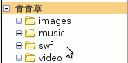
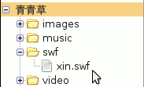
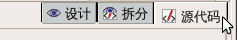
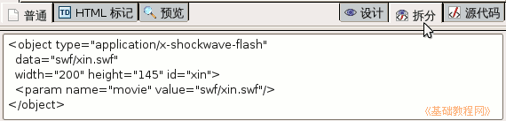

(点两下加号也行)，看看新建的swf文件夹；
(点两下加号也行)，看看新建的swf文件夹；KompoZer操作基础教程
作者：Teliute 来源：基础教程网
八、插入Flash 返回目录 下一课这一节我们来学习如何在页面插入Flash动画，Flash动画格式有swf和Flv，下面我们来看一个练习；
1、启动KompoZer
1）点左上角菜单“应用程序－编程－KompoZer”，就可以启动KompoZer程序；
2）点菜单“格式－页面标题”，修改标题为“插入Flash”，然后点菜单“文件－保存”命令，以“flash.html”保存到qqc文件夹中；
2、插入动画
1）在站点侧栏中，点新建文件夹按钮，在出来的对话框中输入 swf，这个文件夹也在 qqc 里，用来存放动画；

2）找一个flash动画复制到swf文件夹里，中文文件名要改成英文，
本课images文件夹里有一个 xin.swf ；
3）回到KompoZer里，在左边刷新一下站点(点两下加号也行)，看看新建的swf文件夹；

4）保存一下文件，点下边的标签“源代码”，进入到代码窗口里面(下面的例子是进入“拆分”)；

5）在上面代码的最后一行里找到</body></html>，在</body>前面点一下鼠标左键，然后按两下回车键，中间出来一行空白；

6）在空行里输入下面的代码，可以复制粘贴进去，红色为音乐地址，这儿是相对地址；
7）保存一下文件，点浏览按钮，看一看动画效果；
8）插入flv视频的方法，需要一个swf播放器，这儿使用google的，也可以自己制作一个放进去，下面代码供参考；
这儿使用的播放器，可以到本站常用教具中下载：http://teliute.org/jiaoju/index.htm
本节学习了KompoZer中插入Flash动画和flv视频的基本方法，如果你成功地完成了练习，请继续学习下一课内容；
本教程由86团学校TeliuTe制作|著作权所有
转载和引用本站内容，请保留版权信息和本站链接。